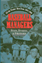
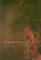

|

|
Baseball
Managers
Stats, Stories, and Strategies
Bloss,
Bob
Philadelphia Book Clinic Certificate of Award |

|
Weaving
Work and Motherhood
Garey,
Anita Ilta
William J. Goode Book Award, American Sociological Association
Family Section |

|
Orientals
Asian Americans in Popular Culture
Lee,
Robert G.
Best Book Award Winner Culture Studies/Popular Culture, Northeast
Popular Culture/American Culture Association |

|
Cultural
Compass
Ethnographic Explorations of Asian America
edited
by Manalansan, IV, Martin F.
Cultural Studies Book Award, given by the Association for
Asian American Studies |

|
East
Indian Music in the West Indies
T�n-Singing, Chutney, and the Making of Indo-Caribbean Culture
Manuel,
Peter
Gordon K. Lewis Award from the Caribbean Studies Association |

|
The
Philadelphia Orchestra
A Century of Music
Philadelphia
Orchestra Assoc., , edited by John Ardoin
Philadelphia Book Clinic Certificate of Award |

|
Songs
of the Caged, Songs of the Free
Music and the Vietnamese Refugee Experience
Reyes,
Adelaida
Book Award from the U.S. Branch of the International Association
for the Study of Popular Music |
|
Understanding
Dogs
Living and Working with Canine Companions
Sanders,
Clinton R.
Charles Horton Cooley Award, Society for the Study of Symbolic
Interaction |

|
Sudden
Death and the Myth of CPR
Timmermans,
Stefan, foreword by Bern Shen
Nominated for the C. Wright Mills Book Award |
|